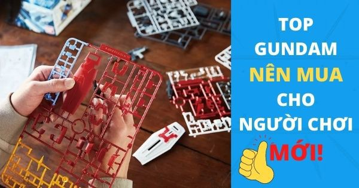
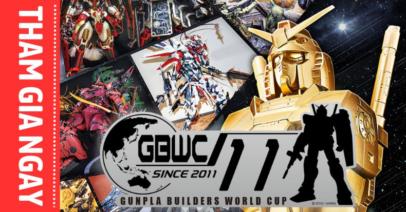
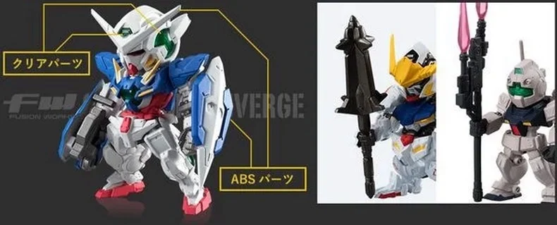

DÀN GUNPLA TỪ GUNDAM BUILD METAVERSE SẮP ĐỔ BỘ Gunpla World!!!
Gundam Build Metaverse bao gồm ba tập phim ngắn sẽ chiếu miễn phí vào tháng 10 năm nay để kỷ niệm 10 năm Gundam Build. Bộ phim được mô tả là chứa đựng những trận chiến trong mơ sẽ khiến các fan phấn kích. Đi kèm với đó là màn ra mắt của các Gundam, mobile suit mới.
Đọc tiếp
5 MẪU GUNDAM NÊN MUA CHO NGƯỜI MỚI BẮT ĐẦU CHƠI GUNPLA

Có rất nhiều bạn thấy hứng thú với các mẫu mô hình lắp ráp Gundam đầy mê hoặc, cũng muốn thử bắt đầu tập tành chơi Gunpla nhưng ngặt nỗi, Bandai lại có tới hơn trăm mẫu muôn hình muôn kiểu khiến bạn hoang mang không biết Gundam nên mua là mẫu nào. Kit nào cũng đẹp, kit nào cũng ưng mà sợ ráp không nổi, vậy thì phải làm sao đây?
Đọc tiếp
GUNPLA BUILDERS WORLD CUP VIỆT NAM - TRỔ TÀI SÁNG TẠO

GUNPLA BUILDERS WORLD CUP (GBWC) đã quay lại Việt Nam. Cuộc thi không còn xa lạ với các fan Gundam nói riêng và cộng đồng yêu thích mô hình nói chung. Tại đây, bạn có thể phát huy kỹ năng tạo ra những mẫu Gunpla độc đáo của mình, cũng như giao lưu với nhiều anh tài khác. Một sân chơi được chính Bandai tổ chức mang tính toàn cầu cùng những phần thưởng hấp dẫn.
Đọc tiếp
CHƠI GUNDAM THỜI HIỆN ĐẠI, ĐÃ ĐẾN LÚC BẠN BỎ QUA MỌI CHẤP NIỆM XƯA CŨ

“Chấp niệm” thời nào, việc nào cũng có, kể cả trong giới chơi Gundam. Nếu bạn đu thành công thú vui này một thời gian đã lâu, chắc chắn ít nhiều đã có trong mình nhiều kinh nghiệm. Lẽ dĩ nhiên ấy mà, kinh nghiệm càng nhiều, chấp niệm cũng nhiều hơn.
Đọc tiếp